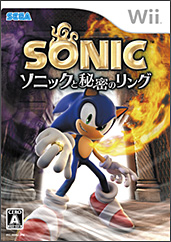

「クリエイターズ インタビュー」 第21回目は、
『ソニックライダーズ シューティングスターストーリー』でプロデューサー兼ディレクター兼メインゲームデザインを担当した森本 兼次郎（もりもと けんじろう）を紹介！
プロフィール：
森本 兼次郎（もりもと けんじろう）
セガ/第一GE研究開発部/プランニングセクション
参加作品『ソニックアドベンチャー』シリーズ、『PSO』シリーズ
『ソニックライダーズ』『ソニックライダーズ シューティングスターストーリー』ではプロデューサー兼ディレクター兼メインゲームデザインを担当。
今回は、2008年1月17日発売予定『ソニックライダーズ シューティングスターストーリー』ディレクターの森本さんにお話しを伺いたいと思います。
前作『ソニックライダーズ』の反響はいかがでしたでしょうか？
おかげ様で大変多くの方々に楽しんで頂きました！
僕にとってこのタイトルは非常にチャレンジ要素の強いタイトルだったわけですが「ソニックの新しいジャンルを確立する」という意味では大成功だったと思います。
今回『ソニックライダーズ シューティングスターストーリー』を作るようになった経緯をお聞かせ願えますか？
続作の構想は既に『ソニックライダーズ』（前作）を作っているときからありました。
いろいろやり残したことがあったし、ここで止まってしまっては新しいジャンルを確立したとは言えなかったし。
だから前作を作り終えて、間髪入れずに次回作のネタだしを始めました。
問題は“どの機種（ハード）で展開させるか？”それを確定させるには随分時間を喰いました。
当時次世代機と呼ばれるハードの情報は徐々に明らかになっていたのですが、前作を遊んでくれたユーザーがどのハードに移行するかは未知数だったし、前作同様マルチプラットフォームで展開した時に全員が等しく満足できる作品が作れるか？ という不安もあったし。
色々と不安材料を抱えたままで強引に押し進めるより、決定に値する情報が得られるまで少し間をあけようという判断があり、開発チームは一度解散しました。
僕はその後『ソニックと秘密のリング』の制作にも関わっていたので、そちらを進めつつライフワークみたいな形で『ソニックライダーズ2』のネタ出しを続けていたのですが、前作を買ってくれたユーザーからのアンケートレポートや、チームメンバーの色々な要望を聞いていくうちに、
「『秘密のリング』が終わってからでは遅い…。いま動かなければ！」
という思いが強くなってきて、社内の偉い人達に色々意見を伺いつつ2週間ぐらいで原案書をまとめてプレゼンテーションを行い、再び「ソニックライダーズプロジェクト」を立ち上げました。
ここから先は、もう飯を食う時間も惜しいぐらい目まぐるしい毎日でしたね。
今回の最新作はどのようなゲーム内容となっているのでしょうか？前作との違い、アピールポイントなどをお話いただければと思います。
最大の違い且つアピールポイントは、「重力」というレースゲーム史上類を見ない斬新なエナジーをフィーチャリングしたことです。
「重力」をチャージして自分の周りに無重力空間を生み、その「重力」を指定の方向に開放することで推進力とする“グラビティコントロール”、そして進行方向上にブラックホールを発生させることで周囲の物を巻き込みながら地上をダイブ（ブースト）する“グラビティダイブ”。
このレースゲーム史上類を見ない斬新なアプローチは、かつて感じたことの無い豪快且つ過激な爽快感を提供できるのではないかと思います。
この重力操作アクションが生まれた経緯ですが…
まだネタ出し段階時に
「単なるレースゲームの続作として見られたくない」
という思いから、ボードではない新しいライディングスタイルの乗り物（例えば“魔法のホウキ”とか）を色々考えていました。
でも、前作でも散々悩んだ「ソニックらしさ」を新しい乗り物で…とか考えていくと、結局行き着くところは“エクストリームスポーツ”の世界にフィードバックしていくので、それなら
「エクストリームスポーツのスタイルは変えずに、でも今まで見たことも聞いたことも無い斬新なレースゲームの魅せ方を考えよう！」
という決断に至りました。
それで「時間をぶっ飛ばす」とか「空間を捻じ曲げる」とかキーワードレベルでキャッチなフレーズを考えている時に「Gを超える」みたいな言葉が浮かんできて、確か
「”ジョジョの奇妙な冒険（集英社 荒木飛呂彦）”に重力方向を変化させる力を持つスタンドが出てきたな…」
とか考えていたら、
「重力方向が変化するときは恐らく一瞬無重力状態が生まれるのだろうな…」
とかだんだん妄想が膨らんできて、いつの間にか
「無重力＝重力のチャージ」→「チャージした重力の開放＝推進力」
という図式まで生まれて、
「これはドリフトの新しい見せ方になるのでは！？」
という発見につながりました。
その後、重力変化ならではのアプローチを何個かネタだしする中で、色々と取捨選択を行い、現在の“グラビティコントロール”と“グラビティダイブ”という2大アクションが生まれました。